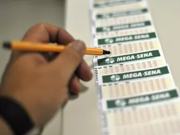
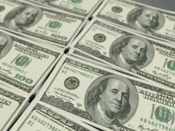
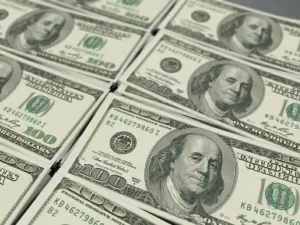

Mega-Sena sorteia prêmio de R$ 25,4 milhões; confira as dezenas
Ler resumo da Notícia:
- Ninguém acertou as seis dezenas do concurso 2850 da Mega-Sena, acumulando o prêmio para R$ 31 milhões no próximo sorteio
- No sorteio atual, 25 apostas acertaram cinco dezenas, cada qual ganhando R$ 100.669,78; e 2.712 jogos acertaram quatro números, levando R$ 1.325,71 cada
- O próximo sorteio ocorre na quinta; apostas podem ser feitas nas lotéricas ou online até 19h do dia do sorteio
- Como faço para participar do próximo sorteio da Mega-Sena?
- Você precisa fazer uma aposta de seis a 20 números nas lotéricas credenciais pela Caixa, ou no site especial de loterias do banco. Participam do próximo concurso todas as apostas registradas até 19h do dia do sorteio
- E quais são as minhas chances de ganhar na Mega-Sena?
- Isso também varia de acordo com a quantidade de dezenas na sua aposta. Com a menor (R$ 5), com seis números, a chance de acertar todas as bolinhas sorteadas e faturar o prêmio maior é de uma em 50.063.860. Jogando uma dezena a mais (R$ 35), a probabilidade aumenta. Passa a ser de uma em 7.151.980. Quem estiver disposto a pagar mais de R$ 25 mil na aposta com 15 dezenas terá uma chance em 10.003 de cravar tudo e ficar milionário.
- Se você desembolsar R$ 40 mil e jogar 16 números, terá uma chance em 6.252; com 17 números e R$ 61,8 mil investidos, você tem uma chance em 4.045; com 18 números você paga mais de R$ 92,8 mil e tem uma chance em 2.697; com 19 números desembolsa mais de R$ 135 mil e sua chance será uma em 1.845; e com 20 números você paga o valor máximo de R$ 193,8 mil e tem uma chance em 1.292.
Veja também:
 
